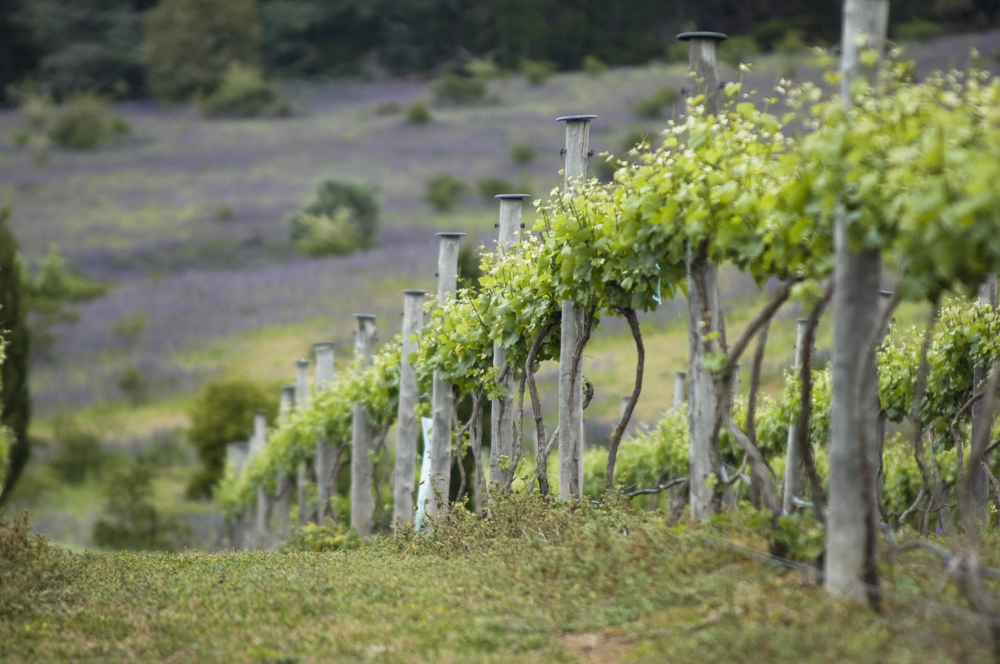

Dear Enrique,"Thank you very much for your hospitality, knowledge and kindness while I visited Off the Vine Vineyards. I enjoyed your fine wines and company. Hope all is well,
Regina R.
Enrique, "Thank you so much for taking the time to help educate Sarah, Joan, and I this past Wednesday. You gave our visit a memorable and warm experience. Sincerely,
Lori McL.
Visited the winery this December 2010 and was delighted with the customer service and friendliness of Susan. She is a positive addition to the Laurello staff. She was also assisted by Stefanie who was very warm and helpful when Susan needed to greet other incoming guests. Not only do we love the food and wine but the warm and welcoming of the entire staff. Keep up the good work.
Kathy & Jim
Susan, Just wanted to say thank you for a fabulous job you did with all of us(16 to be exact) when we visited this December unannounced. You made the wine tasting very enjoyable and we enjoyed all our purchases this Christmas. We will be back up to see you soon.
Jerry

Kim & Larry, I can't believe it is going on 9 years since you opened. Each and every time we come to your cantina we are welcomed by the entire staff. The food is yummy and the wines unique and fabulous. We are impressed with all the complimemts you have made at the winery and always look forward to our visit from Cleveland.
Guy & Georgia
Dear Kim & Larry, Thank you for a great Valentine's Day Dinner. It was a great night and a beautiful dinner. We only had four days with my cousin and your dinner was the hit of the weekend. I'm sure it was a lot of work and it was worth all your efforts, it was wonderful. Thanks again.
Diane M.
Dear Kim & Larry, I cannot compliment you enough for a wonderful evening. I will say this to you. I have never enjoyed myself more at one of my own parties as I did the night of the wine tasting at our home. Kim, you far exceeded any expectations I had with your kindness and warmth and very capable hands. You took care of everything giving me the absolute JOY of seeing our friends enjoyment! Ken and I entertain in our home often, but I never felt so at ease or confident that everyone at the party was having the best time. You and Larry offer a wonderful gift. Your pride and the passion you have for the wine you make is well deserved. The gift is, with your wine, you bring people together to put stress and worry aside and enjoy life through love and friendship and that is what life should be all about. It is obvious that you both derive pleasure through your giving. Ken and I, along with family and friends will enjoy your delicious wine and good times for years to come. With sincere gratitude,
Ken and Wendy S.